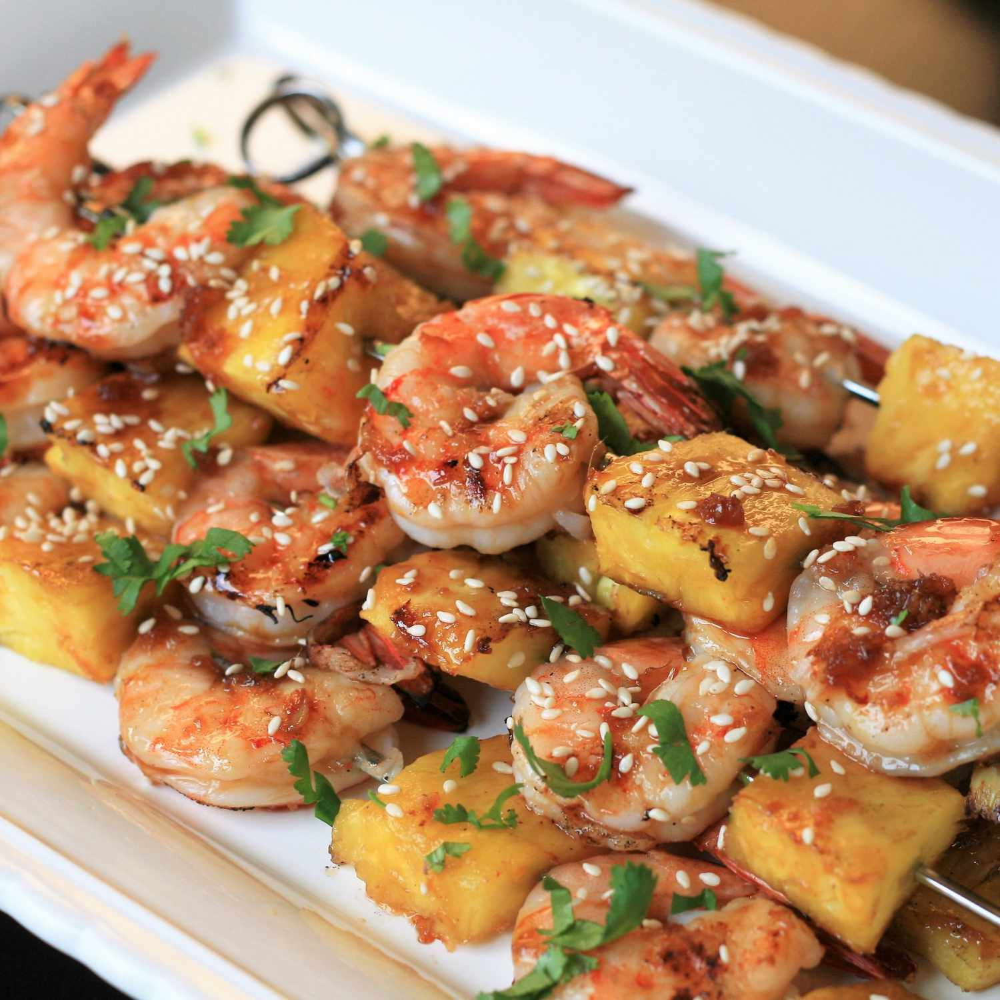

Grilled Teriyaki Shrimp and Pineapple Skewers

Description
These savory-sweet shrimp skewers are easy to make and cook in just a few minutes. They are perfect for summer weeknights or weekend dinner parties. Prep the sauce ahead of time for an even faster dinner. I prefer to use jumbo shrimp (21 to 25 per pound), however use what you have on hand.
Ingredients
- 1 pound jumbo shrimp
- ½ fresh pineapple, cored and cut into 1 1/2-inch pieces
- skewers
- 2 tablespoons soy sauce
- 2 tablespoons brown sugar
Steps
- Combine water, soy sauce, brown sugar, honey, garlic, and ginger in a small saucepan and bring to a boil over medium-high heat. Reduce heat to medium-low and simmer until sauce has reduced and thickened slightly, 8 to 10 minutes.
- Preheat an outdoor grill for medium-high heat and lightly oil grate. Thread shrimp and pineapple alternately onto skewers and place on a platter.
- Arrange skewers on the hot grate. Grill 2 to 3 minutes per side, or until shrimp is opaque and cooked through. Turn grill to low heat and brush sauce on both sides of skewers. Transfer to a serving platter and sprinkle with cilantro and sesame seeds.
Go back to the index